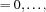

| << Prev | - Up - | Next >> |
OZ_CtWakeUp init [member function]
void init(void);
Initializes an instance of this class. 1
isEmpty [member function]
OZ_Boolean isEmpty(void);
Returns OZ_True if no wake-up list has to be scanned.
setWakeUp [member function]
OZ_Boolean setWakeUp(int i);
Sets the wake-up list indexed by i (i  getNoOfWakeUpLists()-1) to be scanned.
isWakeUp [member function]
OZ_Boolean isWakeUp(int i);
Returns OZ_True if the corresponding wake-up list indexed by i is to be scanned.
getWakeUpAll [static member function]
static OZ_CtWakeUp getWakeUpAll(void);
Sets all possible wake-up events.
| << Prev | - Up - | Next >> |